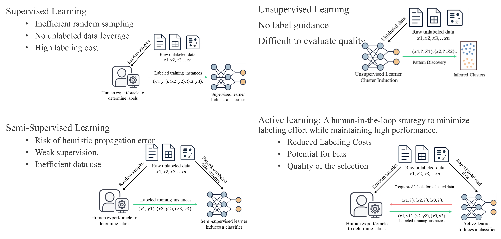

SIGHT: Safety Immersion and Gamified Hazard Training for Industry 5.0
Meeting 03: Updates on our RAG Chatbot, Image-to-3D Modeling and MaxByte’s Workshop at MU Hamilton
August 01, 2025
Meeting Goals
Review and approve Meeting 01 minutes and action items
Update the full team on administrative tasks that were carried out over the past two weeks
Technical updates:
- Preliminary RAG chatbot documentation
- Preliminary RAG chatbot design and implementation
- Plan for expanding the chatbot
- Image to 3D CAD Rendering
- Plan for the MaxByte Workshop at Miami University Hamilton
- Preliminary RAG chatbot documentation
Outline next steps, risks, and assign new action items
Review Action Items from Previous Meeting and Approve Minutes
Fadel M. Megahed
Recap: Action Item Status
| Status | What | Due Date | Who |
|---|---|---|---|
| üü© | Update meeting calendar invitations (avoid holidays and match scheduling tool submission) | Jul 25 | Fadel Megahed & Mohamed Farrag |
| üü© | Complete Google Form for BWC attendance records | Jul 25 | Everyone |
| üü© | Develop and lead Notion training session | Jul 25 | Arthur Carvalho |
| üü© | Complete Notion training | Jul 25 | PIs, SP, and PM |
| üü© | Compile and complete Internal Control Questionnaire (ICQ) | Jul 30 | Fadel Megahed & Mohamed Farrag |
| üü© | Transfer all project deliverables and dates from BWC scheduling tool to Notion | Aug 1 | Mohamed Farrag |
| üü© | Add Paula Murray to BWC‚Äôs OIA platform | Aug 1 | Fadel Megahed |
| üü© | Coordinate MaxByte‚Äôs site visit and workshop | Aug 8 | Mohammad Mayyas |
| üü® | Begin drafting content for Q1 Project Management Plan and Risk Mitigation Plan | Aug 15 | All PIs/Co-PIs |
Approval of Meeting Minutes
Attendance Sign as Required By BWC
Use your full name (first and last) when joining the Zoom call — even if you’re in a shared conference room.
This helps us log attendance accurately for BWC reporting.
If you’re in a conference room:
- Only one computer should have audio enabled.
- All other devices must be muted (microphone and speaker).
- Only one computer should have audio enabled.
Administrative Updates
Mo Farrag, Fadel Megahed, and Jay Shan
Contracts Sent Out to Partners (Must be Finalized by Aug 14, 2025)
IRB Submission Update
- Submitted Level-2 Expedited Review Application for the SIGHT project on July 23, 2025
- Assigned study number: #02415r
- Initial feedback received from IRB:
- CITI training update required (now completed)
- Clarifications were needed on:
- Data confidentiality & sharing with partners
- Survey tools and measures
- Consent process and withdrawal protocol
- Site permissions
- Data confidentiality & sharing with partners
- Revised application submitted on July 31, 2025
- Awaiting final approval from IRB
Notion Workspace: Up and Running
Technical Updates: RAG Chatbot
Lora A. Cavuoto, Fadel Megahed, and Arthur Carvalho
Preliminary RAG Documents: Code of Federal Regulations
Preliminary RAG Documents: OSHA 3170-02R 2007
Preliminary RAG Chatbot: Design
- üìÅ Data Sources
- OSHA/CFR PDFs
- HTML content from OSHA and NIOSH white text white text white text white text white text white text white text
- OSHA/CFR PDFs
- ⚙️ Document Processing
- Extract and convert to Markdown
- Chunk by headers
- Generate embeddings (
text-embedding-3-large) white text white text white text white text white text white text white text
- Extract and convert to Markdown
- üóÑÔ∏è Knowledge Base
- Store chunks and relations in a NetworkX graph (
graph.gml) white text white text white text white text white text white text white text
- Store chunks and relations in a NetworkX graph (
Preliminary RAG Chatbot: Design (Cont.)
- üë§ User Interface
- Streamlit chat receives user question white text white text white text white text white text white text white text
- üîç Retrieval
- Embed question
- Compute similarity
- Retrieve top-K relevant chunks white text white text white text white text white text white text white text
- Embed question
- ü§ñ Generation and Response Display
- Assemble context prompt
- GPT-4o-mini generates answer
- Answer with citations and collapsible details
- Assemble context prompt
Preliminary RAG Chatbot: Try It Out!!
Please click on the image to go to our hosted app.
Future RAG Development
Technical Updates: Image to 3D CAD Rendering
(Ibrahim Yousif)
Challenges & Research Objectives for Autonomous Assembly
Computer Vision Solutions
Image Classification vs Object Detection
Image Segmentation & Pose Estimation
Image Classification, Object Detection & Instance Segmentation
Proposed Diversity-Aware Active Learning Pipeline
Ensuring Labeling Integrity for Computer Vision
Defects cost manufacturers nearly 20% of overall sales revenue
The automated inspection market is projected to increase from $4.15 billion in 2025 to $5.58 billion by 2029.


Bridging the Gap to Production-Ready Vision Systems
Computer Vision Pipeline
Synthetic Defect Generation (1)

Synthetic Defect Generation (2)
Synthetic Defect Generation (3)

Digital Transformation Process & Products
Reallocating Labor in Industrial Facilities Through Integrating AMRs
Smart vs. Autonomous Manufacturing Systems
End-to-End System Architecture & Data Flow for Autonomous Assembly
Physical, Digital and Cognitive Twins

Human-Machine Collaboration: Interaction

Human-Machine Collaboration: Intervention

Sight Plan & Live Demo: Overview
Sight Plan & Live Demo: Fanuc HTML Details
Sight Plan & Live Demo: EC1600 HTML Details
Technical Discussion: MeetKai
SIGHT × MeetKai
Integration: SIGHT × MeetKai
- SIGHT’s Planned Contributions (SIGHT Project):
- Knowledge Graph: OSHA/NIOSH/CFR documents, machine manuals
- Graph-based RAG: semantic chunk retrieval and generation
- Visual Data: 3D CADs, annotated photos, safety overlays
- MeetKai’s Contributions:
- Functionary LLM with JSON tool-calling support
- Multimodal dialogue engine (text, vision, voice)
- VR rendering engine and avatar-based UX
- üîó Goal:
Seamless RAG-powered interactive safety guidance, integrated into immersive VR
Technical Integration Plan: A Possible Approach?
üîå Function-Calling API (from MeetKai → SIGHT):
üì¶ SIGHT Response (back to Functionary):
- üß© MeetKai Uses This To:
- Render visual overlays on equipment in VR
- Drive avatar speech or guidance
- Render visual overlays on equipment in VR
A Potential Example VR Use Case?
User (in VR):
“Can I clean this machine while it’s running?”
Flow:
1. Functionary parses intent
Calls
get_equipment_rag_answer(query, machine_id)white text white text white text white text white text white text white textRAG system returns:
- Answer + citations
- Zones to highlight white text white text white text white text white text white text white text white text text text
MeetKai platform:
- Shows overlay of danger zones
- Avatar warns: “Please lock out power before cleaning.”
- Shows overlay of danger zones
Result: Safety-first decision support inside immersive training
MaxByte Workshop at Miami Hamilton
Reza Abrisham Baf and MaxByte Team
Plan for Workshop
Open Discussion and Next Steps
Mo Farrag and Arthur Carvalho
What questions, concerns, or risks that we should consider?
Immediate Next Steps and Tasks: See and Add to our Notion Calendar

Project funded by the Ohio BWC through their Worker Safety Innovation Center